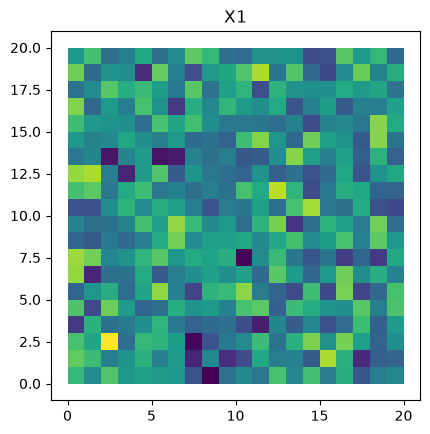
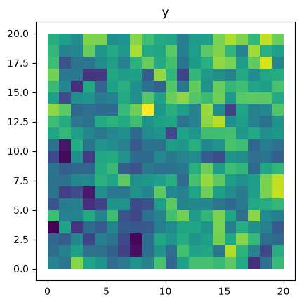
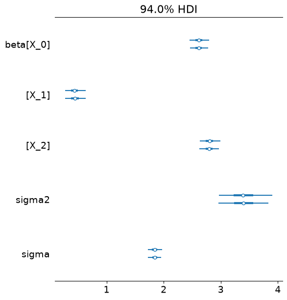
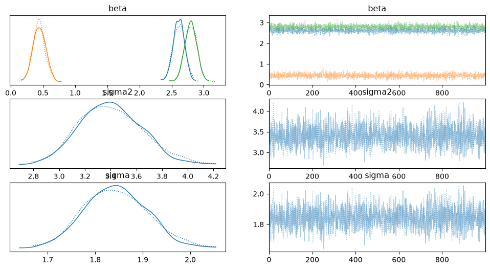
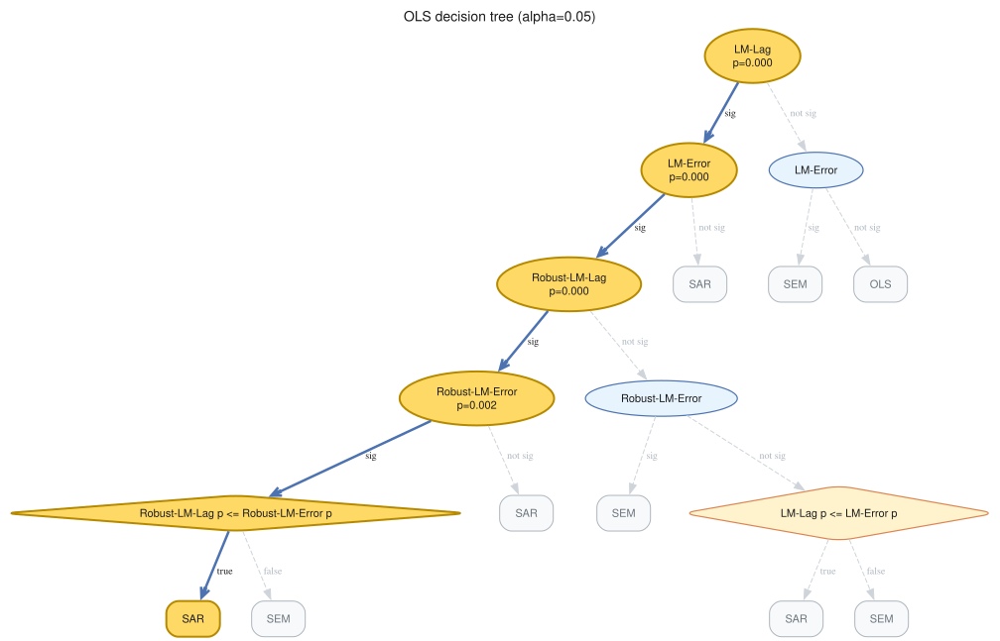
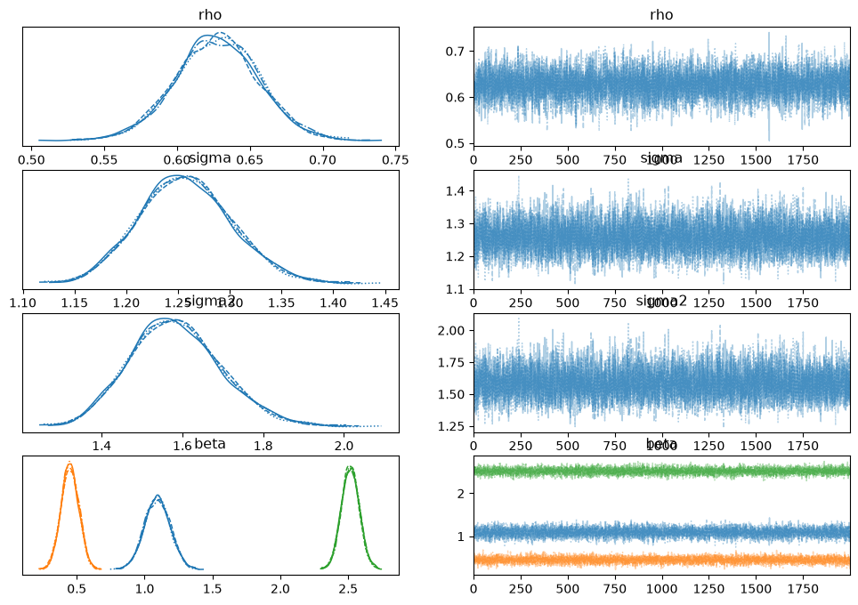

Getting Started with neighbayes¶
This notebook walks through a complete spatial econometric workflow:
Simulate spatial data from a known DGP
Fit a baseline OLS model
Run Bayesian LM diagnostics to test for spatial dependence
Use the decision tree to select a better model
Fit the recommended SAR model
Compute direct, indirect, and total spatial effects
Peek at the underlying PyMC model for customization
import libpysal
from neighbayes.dgp import simulate_sar
gdf = simulate_sar(n=20, beta=[1, 0.4, 2.5], rho=0.6, create_gdf=True)
gdf
| y | X_0 | X_1 | X_2 | geometry | |
|---|---|---|---|---|---|
| 0 | 1.186772 | 1.0 | 0.894920 | -0.211886 | POLYGON ((1 0, 1 1, 0 1, 0 0, 1 0)) |
| 1 | 0.082947 | 1.0 | -0.138822 | -1.031007 | POLYGON ((2 0, 2 1, 1 1, 1 0, 2 0)) |
| 2 | 7.946056 | 1.0 | 1.204577 | 2.183462 | POLYGON ((3 0, 3 1, 2 1, 2 0, 3 0)) |
| 3 | 3.614545 | 1.0 | 0.132812 | 0.339064 | POLYGON ((4 0, 4 1, 3 1, 3 0, 4 0)) |
| 4 | 2.440143 | 1.0 | 0.338531 | -0.191073 | POLYGON ((5 0, 5 1, 4 1, 4 0, 5 0)) |
| ... | ... | ... | ... | ... | ... |
| 395 | 9.062370 | 1.0 | -1.388162 | 1.451612 | POLYGON ((16 19, 16 20, 15 20, 15 19, 16 19)) |
| 396 | 7.804367 | 1.0 | 1.283586 | 0.524427 | POLYGON ((17 19, 17 20, 16 20, 16 19, 17 19)) |
| 397 | 4.979333 | 1.0 | 0.197545 | -0.374758 | POLYGON ((18 19, 18 20, 17 20, 17 19, 18 19)) |
| 398 | 9.605180 | 1.0 | 0.883779 | 1.278081 | POLYGON ((19 19, 19 20, 18 20, 18 19, 19 19)) |
| 399 | 7.141175 | 1.0 | -0.875029 | 0.959843 | POLYGON ((20 19, 20 20, 19 20, 19 19, 20 19)) |
400 rows × 5 columns
gdf.plot("X_1").set_title("X1")
Text(0.5, 1.0, 'X1')

gdf.plot("y").set_title("y")
Text(0.5, 1.0, 'y')

1. Create a Spatial Weights Matrix¶
Spatial econometric models require a spatial weights matrix \(W\) that encodes the spatial relationships between observations. Here we use Rook contiguity (regions that share a boundary or vertex are neighbors).
G = libpysal.graph.Graph.build_contiguity(gdf, rook=False).transform("r")
2. Fit a Baseline OLS Model¶
We start with a non-spatial OLS regression to establish a baseline.
# remove the intercept since we have one (-1)
form = "y ~ -1 + X_0 + X_1 + X_2"
from neighbayes.models import OLS
ols = OLS(formula=form, W=G, data=gdf)
ols.fit(draws=1000, tune=500, chains=2, random_seed=42)
ols.summary()
Initializing NUTS using jitter+adapt_diag...
Multiprocess sampling (2 chains in 2 jobs)
NUTS: [beta, sigma2]
Sampling 2 chains for 500 tune and 1_000 draw iterations (1_000 + 2_000 draws total) took 5 seconds.
We recommend running at least 4 chains for robust computation of convergence diagnostics
/home/runner/micromamba/envs/test/lib/python3.14/site-packages/rich/live.py:260: UserWarning: install "ipywidgets"
for Jupyter support
warnings.warn('install "ipywidgets" for Jupyter support')
| mean | sd | hdi_3% | hdi_97% | mcse_mean | mcse_sd | ess_bulk | ess_tail | r_hat | |
|---|---|---|---|---|---|---|---|---|---|
| X_0 | 2.613 | 0.091 | 2.447 | 2.783 | 0.002 | 0.002 | 2137.0 | 1501.0 | 1.0 |
| X_1 | 0.441 | 0.096 | 0.273 | 0.634 | 0.002 | 0.002 | 1915.0 | 1552.0 | 1.0 |
| X_2 | 2.799 | 0.094 | 2.626 | 2.976 | 0.002 | 0.002 | 2339.0 | 1670.0 | 1.0 |
| sigma2 | 3.405 | 0.246 | 2.972 | 3.884 | 0.005 | 0.005 | 2028.0 | 1409.0 | 1.0 |
| sigma | 1.844 | 0.066 | 1.724 | 1.971 | 0.001 | 0.001 | 2028.0 | 1409.0 | 1.0 |
Notice all the estimated beta parameters are biased upward.
Use arviz to inspect fit¶
the fit method attaches an inference_data object to each model that can be used directly with arviz functions
import arviz as az
az.plot_forest(ols.inference_data)
array([<Axes: title={'center': '94.0% HDI'}>], dtype=object)

az.plot_trace(ols.inference_data)
array([[<Axes: title={'center': 'beta'}>,
<Axes: title={'center': 'beta'}>],
[<Axes: title={'center': 'sigma2'}>,
<Axes: title={'center': 'sigma2'}>],
[<Axes: title={'center': 'sigma'}>,
<Axes: title={'center': 'sigma'}>]], dtype=object)

3. Run Bayesian LM Diagnostics¶
The spatial_diagnostics() method runs a battery of Bayesian LM tests (Doğan, Taşpınar & Bera 2021) that check whether spatial dependence is present in the residuals.
LM-Lag: Tests \(H_0: \rho = 0\) (no spatial lag on \(y\))
LM-Error: Tests \(H_0: \lambda = 0\) (no spatial error correlation)
LM-SDM-Joint: Joint test for \(\rho = 0\) and \(\gamma = 0\)
Robust-LM-Lag / Robust-LM-Error: Neyman-orthogonal robust versions
diag = ols.spatial_diagnostics()
diag
/home/runner/micromamba/envs/test/lib/python3.14/site-packages/tqdm/auto.py:21: TqdmWarning: IProgress not found. Please update jupyter and ipywidgets. See https://ipywidgets.readthedocs.io/en/stable/user_install.html
from .autonotebook import tqdm as notebook_tqdm
| statistic | median | df | p_value | ci_lower | ci_upper | |
|---|---|---|---|---|---|---|
| test | ||||||
| LM-Lag | 421.481250 | 417.631312 | 1 | 0.000 | 296.406514 | 566.950308 |
| LM-Error | 264.261518 | 263.203806 | 1 | 0.000 | 209.683821 | 323.505974 |
| LM-SDM-Joint | 435.676616 | 427.493401 | 3 | 0.000 | 297.709476 | 618.379721 |
| LM-SLX-Error-Joint | 432.952630 | 431.795545 | 3 | 0.000 | 376.499506 | 496.657122 |
| Robust-LM-Lag | 170.365411 | 169.076732 | 1 | 0.000 | 125.696181 | 220.752071 |
| Robust-LM-Error | 9.549120 | 9.476888 | 1 | 0.002 | 7.045373 | 12.373333 |
4. Model Selection Decision Tree¶
The spatial_diagnostics_decision() method walks a Koley & Bera decision tree using the Bayesian p-values above and recommends the next model to fit.
decision = ols.spatial_diagnostics_decision(alpha=0.05, format="ascii")
print(decision)
LM-Lag * (p=0.0000, alpha=0.05)
├── <sig> LM-Error * (p=0.0000, alpha=0.05)
│ ├── <sig> Robust-LM-Lag * (p=0.0000, alpha=0.05)
│ │ ├── <sig> Robust-LM-Error * (p=0.0020, alpha=0.05)
│ │ │ ├── <sig> Robust-LM-Lag p <= Robust-LM-Error p *
│ │ │ │ ├── [SAR] * ← SELECTED
│ │ │ │ └── [SEM]
│ │ │ └── [SAR]
│ │ └── <not sig> Robust-LM-Error
│ │ ├── [SEM]
│ │ └── <not sig> LM-Lag p <= LM-Error p
│ │ ├── [SAR]
│ │ └── [SEM]
│ └── [SAR]
└── <not sig> LM-Error
├── [SEM]
└── [OLS]
ols.spatial_diagnostics_decision(alpha=0.05)

5. Fit the Recommended SAR Model¶
If the diagnostics suggest spatial dependence, we fit a Spatial Autoregressive (SAR) model:
The likelihood includes the Jacobian \(\log|I - \rho W|\) so that posterior inference on \(\rho\) is exact.
from neighbayes.models import SAR
sar = SAR(formula=form, W=G, data=gdf)
sar.fit(draws=2000, tune=100, chains=4, random_seed=42)
sar.summary()
/home/runner/micromamba/envs/test/lib/python3.14/site-packages/neighbayes/_logdet/_jax.py:188: ComplexWarning: Casting complex values to real discards the imaginary part
W_arr = np.asarray(W, dtype=np.float64)
Gibbs sampling (sar): 4 chains for 100 tune and 2,000 draw iterations (4 x 2,100 = 8,400 draws total)
/home/runner/micromamba/envs/test/lib/python3.14/site-packages/rich/live.py:260: UserWarning: install "ipywidgets"
for Jupyter support
warnings.warn('install "ipywidgets" for Jupyter support')
Sampling took 4s (2,022 draws/s)
| mean | sd | hdi_3% | hdi_97% | mcse_mean | mcse_sd | ess_bulk | ess_tail | r_hat | |
|---|---|---|---|---|---|---|---|---|---|
| rho | 0.628 | 0.029 | 0.573 | 0.682 | 0.000 | 0.000 | 8354.0 | 6241.0 | 1.0 |
| sigma | 1.258 | 0.045 | 1.175 | 1.341 | 0.001 | 0.000 | 7600.0 | 7794.0 | 1.0 |
| sigma2 | 1.584 | 0.113 | 1.381 | 1.800 | 0.001 | 0.001 | 7600.0 | 7794.0 | 1.0 |
| X_0 | 1.094 | 0.094 | 0.918 | 1.270 | 0.001 | 0.001 | 8123.0 | 7190.0 | 1.0 |
| X_1 | 0.450 | 0.065 | 0.324 | 0.564 | 0.001 | 0.000 | 7813.0 | 7972.0 | 1.0 |
| X_2 | 2.516 | 0.066 | 2.394 | 2.641 | 0.001 | 0.001 | 7878.0 | 7867.0 | 1.0 |
az.plot_trace(sar.inference_data)
array([[<Axes: title={'center': 'rho'}>, <Axes: title={'center': 'rho'}>],
[<Axes: title={'center': 'sigma'}>,
<Axes: title={'center': 'sigma'}>],
[<Axes: title={'center': 'sigma2'}>,
<Axes: title={'center': 'sigma2'}>],
[<Axes: title={'center': 'beta'}>,
<Axes: title={'center': 'beta'}>]], dtype=object)

6. Compute Spatial Effects¶
For the SAR model, a change in \(X\) propagates through the spatial multiplier \((I - \rho W)^{-1}\). The effects decompose into:
Direct: Effect of \(X_i\) on \(y_i\) (own-region)
Indirect: Effect of \(X_j\) on \(y_i\) for \(j \neq i\) (spillover)
Total: Direct + Indirect
effects = sar.spatial_effects()
effects
| direct | direct_ci_lower | direct_ci_upper | direct_pvalue | indirect | indirect_ci_lower | indirect_ci_upper | indirect_pvalue | total | total_ci_lower | total_ci_upper | total_pvalue | |
|---|---|---|---|---|---|---|---|---|---|---|---|---|
| variable | ||||||||||||
| X_1 | 0.488807 | 0.353218 | 0.625133 | 0.0 | 0.726157 | 0.481062 | 1.021790 | 0.0 | 1.214964 | 0.841558 | 1.633957 | 0.0 |
| X_2 | 2.734523 | 2.585793 | 2.889038 | 0.0 | 4.061549 | 3.158772 | 5.206081 | 0.0 | 6.796072 | 5.817642 | 8.038672 | 0.0 |